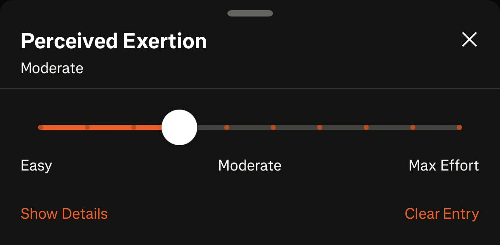
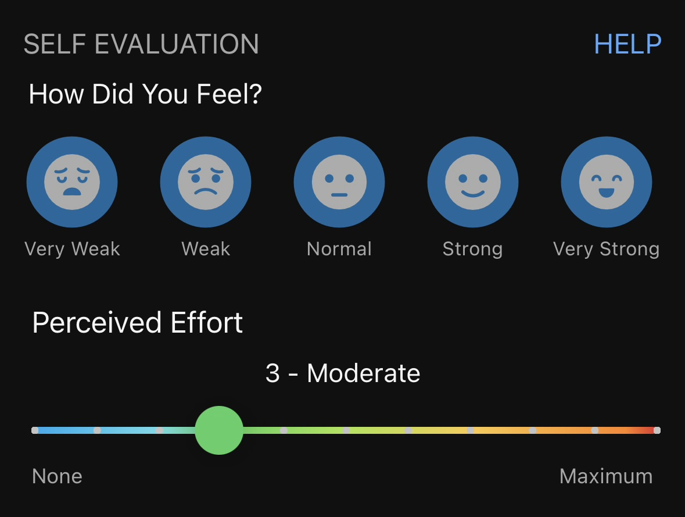

RPE in Running: What Pace and Heart Rate Don’t Tell You
written on 16 October 2026
Pace and heart rate are probably the first things we look at after a run. How fast did we go? Was the heart rate too high? Did we stay in the intended zone? All useful questions. But there is one more thing worth asking:
How difficult did the run actually feel?
That is where RPE comes in.
What is RPE?
RPE stands for rating of perceived exertion. Simply put, it is your own rating of how hard you are working.
If you use Garmin or Strava, perhaps you have seen an option to record perceived effort after an activity.


It is easy to skip. After all, the watch has already recorded so much. Yet the watch cannot tell us exactly how the run felt.
There are different RPE scales. The original Borg scale goes from 6 to 20, while a common modified scale goes from 0 to 10. Most running apps nowadays use the 1-to-10 version.
For this article, I am using the simple 1-to-10 version: a low number means very little effort, while 10 means your maximum effort. The numbers are only useful when we understand what they feel like, and use them consistently.
Same pace, different run
Two runners can run the same route at the same pace, in a similar heart-rate zone, yet feel completely different.
Even for the same runner, a familiar pace can feel comfortable one day and surprisingly difficult on another.
Perhaps we did not sleep well. Perhaps our legs are still carrying fatigue from the previous workout. Perhaps it is hotter than usual. Terrain, hydration and fueling can affect how the effort feels too.
RPE gives us a way to record that experience. It does not tell us exactly why a run felt harder, but it gives us a reason to pay attention. A higher number is not necessarily a sign that we have lost fitness. Sometimes, the same pace simply asks more of us that day.
How I use RPE during a run
I personally find RPE useful for keeping myself from going beyond the intended effort.
During an easy run, I try to hold it at about 3–4. That is my own rough reference, not a universal rule. What matters more is that I can still speak comfortably in full sentences. If I am struggling to hold a conversation, calling it an “easy run” does not magically make it easy.
During harder speedwork, I sometimes reach an RPE of 8–9. The effort is very hard, but I still want to stay in control rather than empty everything into the first few repetitions. I like having something left for the last lap.
That does not mean every speed session should reach 9, or that every final lap needs to be an all-out effort. Different workouts ask for different things.
To me, RPE is a reminder to respect the purpose of the run, instead of chasing whatever pace looks impressive on the watch.
Record the feeling, not just the number
Checking RPE during a run and recording it afterwards serve slightly different purposes.
During the run, it helps us adjust: Is this still the effort I intended? Should I ease off?
Afterwards, we can record how demanding the whole session felt. For an interval workout, those are not necessarily the same number. The hardest repetition might feel like a 9, while the session overall feels less demanding because of the recovery periods.
A short note helps make the rating clearer. For example, a hypothetical training entry could read:
Easy 8 km. RPE 4. Legs felt heavy at the start, but I could speak comfortably throughout.
Or:
Intervals. Session RPE 7. Last two repetitions felt closer to 9.
Nothing complicated. Just enough context to remember what happened.
If you work with a coach, that context can make the conversation more useful. The same applies when you share your training with an AI assistant—provided you actually include the rating and the note, rather than expect it to know how you felt.
RPE is not a diagnosis, though. Pain, chest discomfort or unusual dizziness should not be treated as merely a higher effort score to push through.
Another piece of the picture
I do not think we need to choose between listening to our bodies and looking at our data. Pace tells us how fast we moved. Heart rate shows how our heart responded. RPE adds our own account of the effort. None of them tells the whole story alone.
We spend so much time learning to read our watches. Perhaps it is worth learning to read ourselves too.
Further Reading
Cleveland Clinic: RPE and the different scales
Garmin: Recording perceived effort after an activity
I have built Pacey, a tool that helps runners see how their fitness measures up to their marathon goal time and build a training plan around it. Feel free to give it a look if you happen to use a Garmin watch!
Peace out.